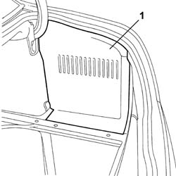
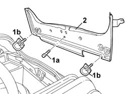

7040B20 Luggage compartment/load platform lining - R.R.
- Path
- Procedures > 70 FITTINGS > 7040 BODY INTERIOR UPHOLSTERY AND TRIM > 7040B LUGGAGE COMPARTMENT AND LOAD PLATFORM TRIMS > 7040B20 Luggage compartment/load platform lining - R.R.
- Kind
- repair procedure (removal / refitting; the operation number is the code)
- Applies to
- all engines; all production periods
- Interactive page
- https://sloeber94.github.io/elrnDB-lThss/en/#/113592
Applies to: all engines; all production periods
 Removing
Removing
 Refitting
Refitting- Open the boot lid.
See in Op. 7040B10 LOAD CARRYING COMPARTMENT LINING - R.R.
See in Op. 7040B12 Luggage compartment/load platform left SIDE LINING - R.R.
1. Lower the luggage compartment side trim flap.

Applies to: all engines; all production periods
1. Undo the fixing bolts (1a) and remove the luggage straps (1b).
2. Remove the trim from the housing.

Applies to: all engines; all production periods
Refitting
Removing- Place the trim in position and tighten the fixing bolts.
- Tighten the bolts fixing the luggage straps to torque.
 | Value - daNm | Fastening | Component | Ø |
|---|---|---|---|---|
. | 2.5 | Bolt | BOOT/LOAD CARRYING PLATFORM LINING GRIP | M8 |
See in Op. 7040B12 Luggage compartment/load platform left SIDE LINING - R.R.
See in Op. 7040B10 LOAD CARRYING COMPARTMENT LINING - R.R.
- Close the boot lid.
Topics linked from this page (2)
- 7040B10 LOAD CARRYING COMPARTMENT LINING - R.R.
- 7040B12 Luggage compartment/load platform left SIDE LINING - R.R.